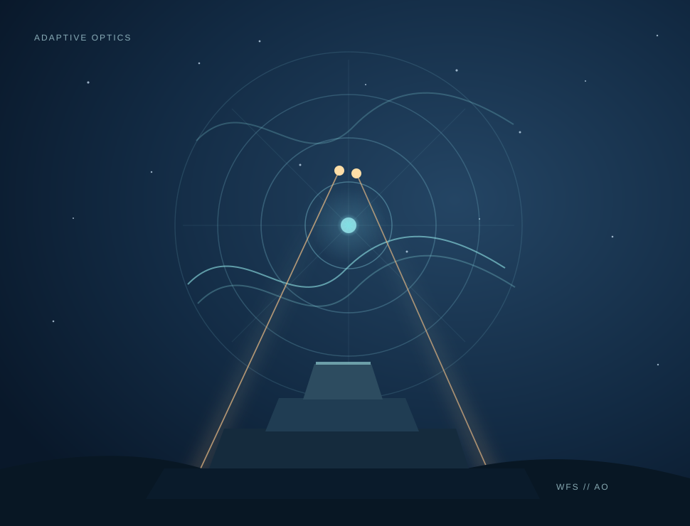

Making the
universe
clearer.
Exploring adaptive optics, wavefront sensing and the technology that powers the next generation of astronomical discovery.

Where precision
meets possibility.
Ground-based telescopes are powerful, but Earth's atmosphere distorts the light they collect. We study the optics, sensing techniques and instrumentation that turn that limitation into an engineering challenge we can solve.
Adaptive optics
Improving angular resolution by measuring and compensating for atmospheric turbulence.
02Wavefront sensing
Developing techniques to retrieve the wavefront information that enables precise correction.
03Instrument AIV
Bringing complex instruments from designs and laboratory integration to telescope operations.
Science enabled
by engineering.
Explore the instruments and technology programmes that connect our expertise to observatories around the world.
The journey is part of the science.
Turning an optical design into a working instrument takes more than a good idea. Alignment, integration, verification and on-sky commissioning are central to making advanced science possible.
Our approachPeople. Papers.
Perspectives.
Our work spans theory, engineering and hands-on experimentation. Explore the connections behind the instruments.